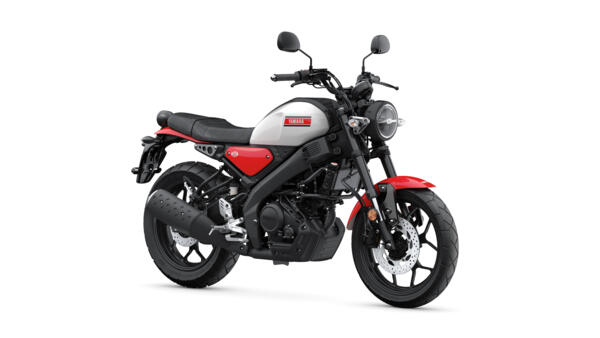
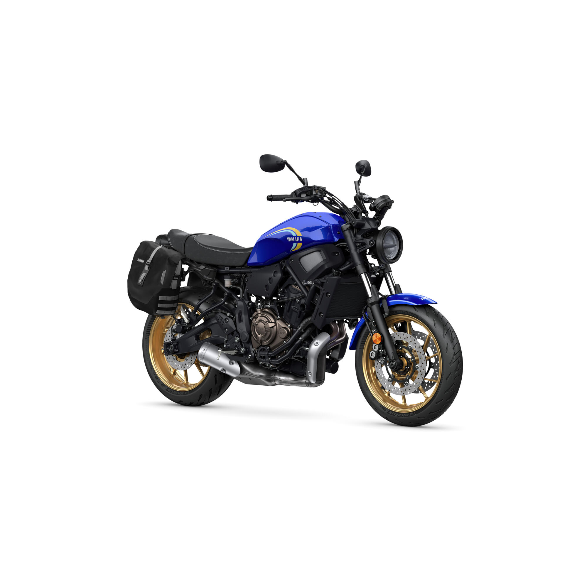
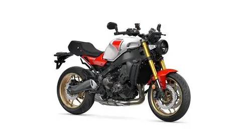
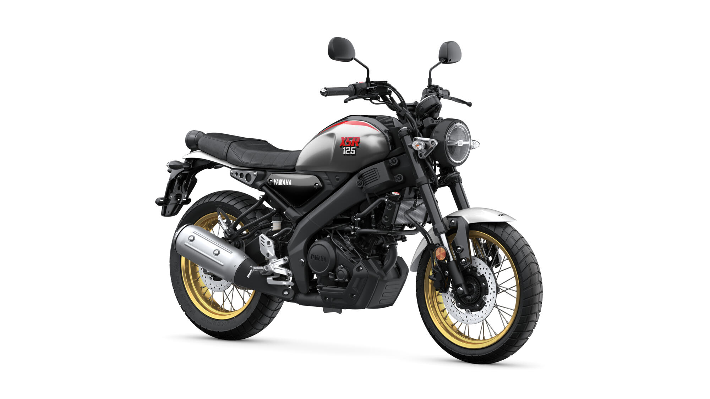

Tentang Yamaha XSR
Yamaha XSR merupakan motor *sport heritage* legendaris yang memadukan keindahan desain motor klasik masa lalu dengan kecanggihan teknologi mesin masa kini. Diciptakan bagi para pengendara yang menghargai estetika seni berkendara tanpa mengorbankan performa.
Motor ini mengusung konsep *Neo-Retro* dengan lampu bulat ikonik berteknologi LED modern, tangki bergaya *drip-shaped*, serta jok *tuck and roll* klasik. Kombinasi berkendara yang sempurna untuk melesat di perkotaan maupun menjelajah rute kustom akhir pekan.
Galeri XSR Custom & Varian




Lihat katalog resmi Yamaha Indonesia
Tabel Informasi & Spesifikasi XSR
| Varian Model | Tipe Mesin | Fitur Unggulan | Estimasi Harga (OTR) |
|---|---|---|---|
| Yamaha XSR 155 | 155cc, Liquid Cooled, 4-Valves dengan VVA | Assist & Slipper Clutch, Upside Down Suspension | Rp38.000.000 - Rp40.000.000 |
| Varian Custom / Anniversary | Livery Spesial WGP 60th, Ban Dual Purpose | Rp40.500.000 - Rp42.000.000 | |
| XSR Heritage Parts Kit | Paket Aksesoris Resmi (Cafe Racer / Tracker) mulai dari Rp4.500.000 | ||